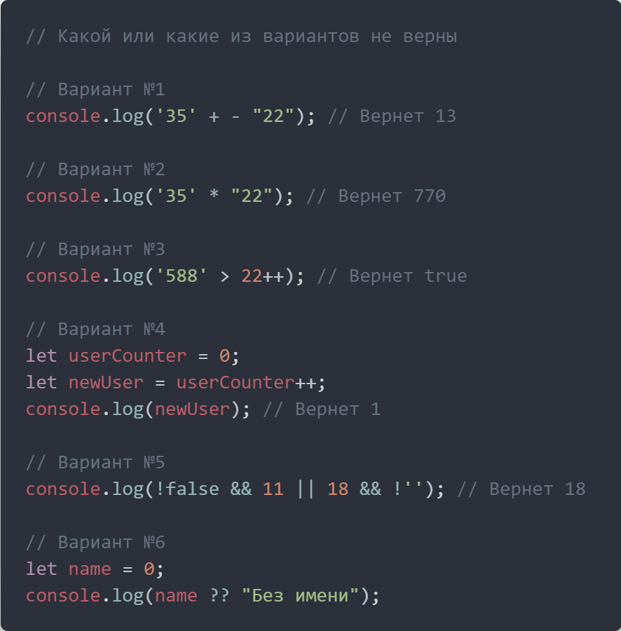
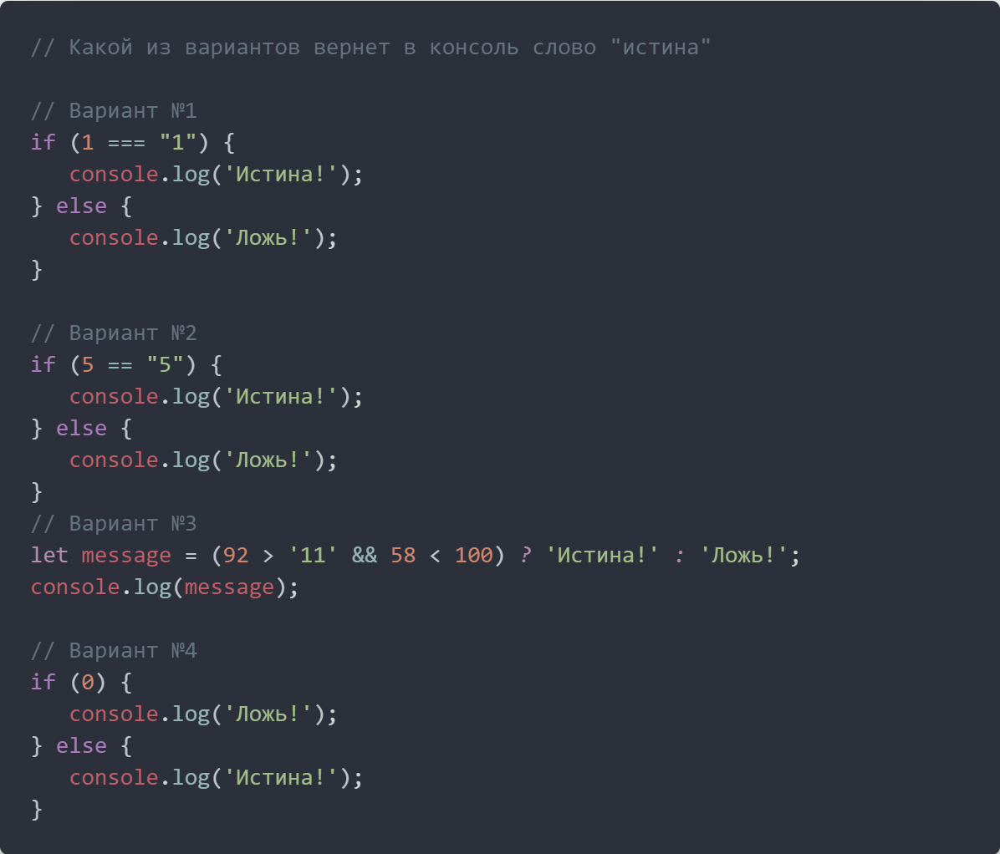

Задание №1
Операторы javascript "2"+2=22

- Неверно. Сначала строка "22" конвертируется в число -22, затем идет сложение строки и числа. Получим строку 32-22
- Верно. Оператор умножить конвертирует значения в числа
- Вызовет ошибку. Оператор инкремент и декремент можно применять только к переменным
- Неверно. Сначала значение переменной userCounter присвоится переменной newUser, и после значение переменной userCounter увеличится на единицу. Поэтому значение переменной newUser будет равно 0
- Неверно. Шаг 1 - !false && 11 вернет 11 потому что оба значения true. Шаг 2 - 18 && !'' вернет true, потому что оба значения true. Шаг 3 - 11 || true вернет первое значение, потому что 11 это true. Ответ - вернется значение 11
- Вернется 0, потому что первый аргумент не null и не undefind
Задание №2
IF ELSE. Условный оператор "?"

- Вернет ложь! Оператор строгого равенства, значит число 1 не будет равно строке "1", условие будет равно false и выполнится код в блоке else
- Вернет истина! Оператор нестрогого равенства приводит строку в число, поэтому условие будет равно true и в консоль выведется Истина!
- Вернет истина! 92 > '11' = true | 58 < 100 = true | true && true = последнему true. Условие в скобках равно true значит выведется 'Истина!'
- Вернет истина! Ноль это false, поэтому выполнится код в блоке else